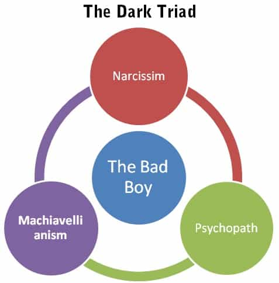

< < < Back
How To Optimize Your Personality – Return Of Kings
A fascinating aspect of personality is that it is partly essential, partly malleable. According to The Handbook of Developmental Psychology, most personality traits are about 40-60% inherited; hence about half is changeable. According to distinguished psychologists such as Robert Plomin, the genetic predisposition for intelligence and personality tend to be more dominant later in life, and there are complex gene-environment interactions that are difficult to disentangle the causal relationship of. It does not make things easier and more reliable that studies in psychology are seldom replicated: one study cannot confirm the next one. Therefore one should be sceptical about the general scientific reliability of psychology, although behavior genetics seems more accurate than for instance social psychology.
Regardless of how things exactly are in the real world, it will still leave a person with about 30-50% malleability during a large part of his life, which implies the possibility for active and constructive decisions. The most fundamental years when a man has the most developmental agency (ability to change his way of being and behaving) in life are roughly between 18-45. For that reason, anyone who aims for self-improvement and lifestyle optimization would ignore the malleable elements of oneself at his own risk. Therefore I intend to describe how a person can optimize his personality. It is more about to raise self-awareness and teach some fruitful concepts than to give concrete advices.
I will mainly focus on the so-called Big Five Personality Traits and the Dark Triad (Machiavellianism, narcissism and psychopathy), since these eight dimensions cover most aspects that are relevant for this audience.
Hopefully the analysis can offer some guidance with regard to personal development and some of the challenges that men might face during modern existence. To be ”the best version of yourself” is so much more than to get laid and to optimally handle disposable income. It might even save your own life.
The Big Five
In 1884 Sir Francis Galton hypothesized that there might be an underlying taxonomy for personality traits. During the 20th century, this field of research has been developed by for instance Hans Eysenck, and Paul Costa and Robert McCrae.
The Big Five Personality Factors include openness to experience, conscientiousness, agreeableness, extraversion and neuroticism, often abbreviated as OCEAN. I will list some of the pros and cons with each Big Five trait and suggest a more optimal position. First, a person can take a Big Five test.

Openness to experience
Positive: Open to new ideas and experiences, such as books, travel and a more exciting and creative sex life.
Negative: Naive and xenophilic, and perhaps open to silly ideas such as being a white knight male feminist.
Optimal: Try to find a balance between both and which fits your particular personality profile and circumstances. Avoid the negative extremes and detrimental behavior – for the sake of both yourself and other people (xenophilia and xenophobia). Base your decisions on common sense, experiences and science, not whimsy and caprices.
Conscientiousness
Positive: Strong work ethic and general ethics in life, directly or indirectly required for both profound and spiritual development. High conscientiousness is negatively correlated with obesity.
Negative: A person can become too diligent and have a hard time to let go of even trivial stuff, or become a workaholic. At the extremes, conscientiousness overlaps neurotic behavior.
Optimal: Conscientiousness is perhaps the most important personality trait for a man since it largely correlates with success in life. Generally the more conscientious the better, but some sort of balance and distance to work and other duties have to be maintained. Otherwise it might start to overlap neurotic and irrational behavior, which can have a negative impact on your social life. Perhaps it can also lead to deterimental beta behavior such as to help women in a counterproductive fashion.

Extraversion
Positive: Extraversion, to a significant degree, is an important trait which underlies the ability to make friends and meet girls. Although a loud mouth might be overrated (quality sometimes beats quantity), social success hinges upon the ability to talk to other individuals, whether in school, at work, during a date, or in a nightclub. Overall, a large degree of extraversion is better than to be leaning towards the more introvert side.
Negative: Extraversion can prevent a person from being able to be on their own from time to time. Social interaction is indeed constructive for a variety of reasons, but to spend time alone and focus on one’s own tasks are as important if one aims to make a career or just do a decent job.
Optimal: Be aware of your own level of extraversion and try to change your behavior accordingly. Introverts may have to force themselves to be more talkative and sociable, while extrovert people may have to struggle to spend some valuable time alone.
Agreeableness
Positive: Other people tend to appreciate agreeable people more than unpleasant individuals. It almost goes without saying. Maybe that is part of the reason why women generally do have more friends than men, since they are somewhat more agreeable on average. Some degree of agreeableness is thus required to bond with other human beings, whether momentarily or more permanently.
Negative: A too agreeable person can be seen as weak and will get used by either neurotic or dark triad individuals (see below).
Optimal: Be aware of your general degree of agreeableness and adjust behavior depending on context. Sometimes fake smiles are required to survive in the workplace or at your girlfriend’s dinner party, but also to say no and not invest friendly behavior in those who do not deserve it.
Neuroticism
Positive: Most individuals have some degree of neuroticism and it might have been adaptable in our evolutionary past. Females are, on average, more neurotic than men. To feel at least slightly anxious about for instance the well-being of those who are close to us is normal human behavior.
Negative: Neuroticism is of course generally linked to various negative sensations and behaviors, and at the extreme it can lead to suicidal tendencies, neurosis and severe depression.
Optimal: A small degree of neuroticism is, of course, preferable to larger degrees. While being relatively emotionally stable, try to avoid a destructive lifestyle and people who do only appear to have a negative impact on your life. That might safeguard against a self-inflicted rise of neuroticism.

The dark triad
The dark triad consists of three at least moderately inter-related personality traits: Machiavellianism, narcissism and psychopathy. The word dark implies a set of real or potentially malevolent traits, linked to for instance social manipulation, callousness, entitlement, and risky behavior. One can take a dark triad test here.
Studies show that the dark triad traits are higher among males, but it seems that females are indoctrinated into being more dark triad-ish in current times, a phenomenon probably connected to the current degenerate Western culture and third-wave feminism and you-go-girl-ism. The typical dark triad male is generally more successful with women than more agreeable and conscientious males, at least in a short-term relationship context.

Machiavellianism
Positive: Machiavellianism, derived from the Italian political philosopher Niccolò Machiavelli’s work The Prince, signifies a manipulative and calculating personality trait, often found among leaders in general, successful businessmen, and politicians. Even though some sort of talent has to be an underlying factor, Machiavellianism is generally linked to success in life. Plus it can safeguard against others that might want to use you for their own good.
Negative: This behavior is largely unvirtuous and something that perhaps should be at least partly suppressed in a healthy society.
Optimal: At least in current times, a moderate to high degree of this trait could be useful when socializing with other individuals. If not for other reasons than because it can save you from being used by others with similar tendencies.
Narcissism
Positive: A moderate to high degree of narcissism is correlated with success in life (as long as it is combined with talent and/or hard work). Plus, it is being looked upon by other people as “brighter” than Machiavellianism and psychopathy, probably due to our current largely narcissism-oriented culture.
Negative: A too large degree of narcissism (narcissistic personality disorder) can be seriously unhealthy, for both oneself and other individuals, and general narcissism can at least be annoying when frequently displayed by other individuals. Narcissists can end up alone later in life due to having burned many bridges in earlier phases. Furthermore, it can prevent a person from doing important daily tasks and to fulfill long-term goals. It is not particularly constructive to take selfies and post them on Snapchat and Instagram.
Optimal: A healthy, moderate degree of narcissism, which helps to boost confidence and self-actualization, appears to be the most optimal in the long-term perspective. It is better than both too low or too high degrees of this trait.

Psychopathy
Positive: Psychopathy, in tandem with other utilitarian traits, can lead to success in life (girls, at the job market, politics etc.) due to risk-taking and over-confidence. It is also easier to deal with the loss of other people throughout life, since a psychopathic individual do care little or nothing about fellow human beings.
Negative: Psychopathy is correlated with criminality and other forms of anti-social behavior, and few normal people think that a healthier Western culture should favor psychopaths in general.
Optimal: A small to moderate degree of psychopathy overlaps with higher confidence and calculated risk-taking. It can balance other traits such as conscientiousness and agreeableness.

Conclusion
Overall it is about to identify your own strengths and weaknesses with regard to these eight personality dimensions, in order to both know yourself better and other human beings (friends, enemies, girls, co-workers, opponents). Moreover, a utilitarian balance, adjusted for the shape of our current Western culture, has to be maintained in order to both grow and survive as a person.
Read More: Game And The Problem Of Changing One’s Personality